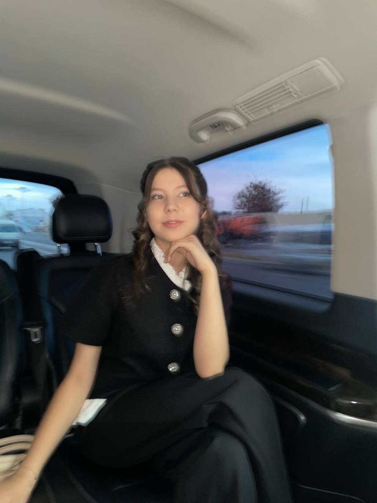
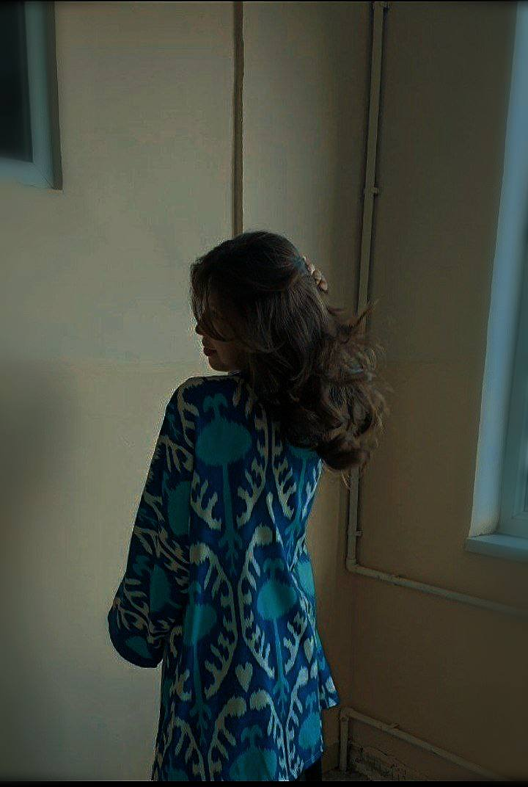

теперь это моя любимая фотография, она просто шикарна, как и сама ты. тут ты фоткаешься как взрослая девушка но я вижу маленькую милую капризную девочку, этим ты и завоевала мою любовь, своей прекрасным нравом и милым характером.
даже если не видно лица эта фотке она все ровно останется для меня одним из лучших, ведь на ней ты выглядишь настоящей, одним словом муашкой, спасибо за то что подарила мне возможность видеть тебя настоящую - милую маленькую девочку. люблю тебя, дорогая.
